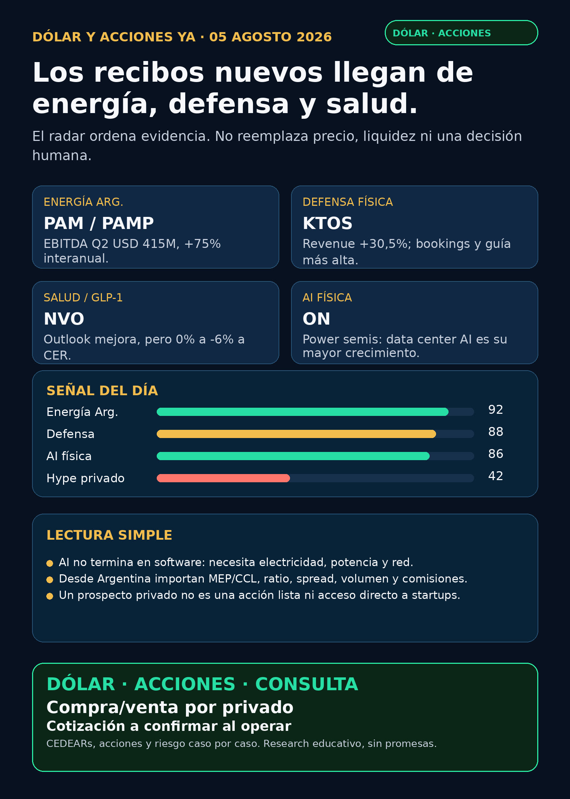

Los recibos nuevos llegan de energía, defensa y salud.
Pampa, Kratos y Novo Nordisk: señal verificable, riesgo visible y cero promesa de rentabilidad.
Texto WhatsApp
Placa del día

Dólar & Acciones YA — 05/08
Fecha de edición: 2026-08-05. Corte público: 08:48 ART. El mercado de Estados Unidos todavía no abrió al momento del corte; no se publican precios de acciones ni señales de ejecución. Research educativo para Argentina y carteras globales. No es recomendación personalizada de compra ni de venta.
Lectura simple del día
Hoy el radar se abre más allá de la lista AI. Pampa Energía (PAMP local / PAM ADR) dejó un recibo operativo argentino: EBITDA ajustado Q2 de USD 415 millones, +75% interanual, con Rincón de Aranda, gas integrado a generación y mejores márgenes eléctricos. Kratos (KTOS) dejó el recibo de defensa física: revenue Q2 de USD 458,8 millones, +30,5%, bookings de USD 492,2 millones y una guía anual más alta. Novo Nordisk (NVO) enseña la parte incómoda de GLP-1: subió su outlook, pero aún prevé entre 0% y -6% a moneda constante.
En paralelo, sigue vigente la evidencia de AI que quedó verificada el domingo: Palantir (PLTR) mostró monetización enterprise y onsemi (ON) mostró que AI también necesita conversión y distribución eléctrica dentro del data center. Son confirmaciones de tesis, no precio de entrada ni noticia para perseguir hoy.
Las señales están ordenadas por valor educativo y calidad de evidencia, no como ranking de compra. Buena empresa ≠ buena inversión al precio actual ≠ buen instrumento para Argentina ≠ tamaño correcto dentro de una cartera.
Capa Argentina: dólar, MEP/CCL y CEDEARs
Datos públicos refrescados a las 08:48 ART del 05/08:
- BlueLytics: dólar blue vendedor ARS 1.545, actualización 05/08 08:45 ART.
- CriptoYa: MEP AL30 24hs ARS 1.521,72 y CCL AL30 24hs ARS 1.618,17. Ambos conservan timestamp de cierre del 04/08 cerca de las 16:59 ART: son referencias públicas de cierre, no cotizaciones intradiarias del broker.
- Para ejecutar, faltan siempre libro, volumen, spread, comisiones, precio del subyacente en USD y CCL implícito. Un CEDEAR representa una fracción de una acción extranjera: que el negocio sea bueno no hace automático que el instrumento local sea líquido o conveniente.
Accionable local Argentina: PAMP y PAM no son el mismo instrumento; antes de operar hay que verificar rueda, plazo, volumen y precio en el broker. Accionable internacional/global: PLTR, ON, NVO y KTOS cotizan en Estados Unidos, pero la disponibilidad local de CEDEAR, ratio, spread y acceso no se revalidó en esta corrida. No accionable directo: RVII sigue en prospecto preliminar, sin mercado público existente ni acceso Argentina verificado.
Tesis central
AI puede facturar en software, pero el mundo físico sigue cobrando: electricidad, semiconductores de potencia, red, generación, contratos de defensa y capacidad industrial. La noticia nueva de hoy no es que “todo es AI”; es que un radar serio necesita separar tres preguntas: quién está ejecutando, quién tiene un instrumento operable y qué riesgo está escondido en la narrativa.
En criollo: un moat es una ventaja difícil de copiar. En Pampa importa la integración de petróleo, gas y generación; en Kratos, producción, bookings y contratos; en software AI, integración con datos y operaciones; en salud, producto, precios, cobertura y regulación. Ninguno de esos recibos dice por sí solo cuánto pagar ni cuánto poner.
Señales educativas del día
1. Energía Argentina — Pampa Energía (PAMP / PAM)
- Qué pasó: reportó EBITDA ajustado Q2 de USD 415 millones, +75% interanual; revenue trimestral de USD 746 millones versus USD 486 millones un año antes.
- Qué sostiene la señal: el filing atribuye el avance al ramp-up de Rincón de Aranda, mayor producción de crudo, gas integrado hacia generación y mejores márgenes spot/B2B de electricidad.
- Fuente primaria (04/08): SEC EX-99.1 de Pampa.
- Lectura en criollo: es una tesis argentina con operación real, no una copia de la historia de data centers de Estados Unidos.
- Riesgo: precio realizado del crudo, hedges, capex, financiación y ejecución de proyectos.
PAMPlocal yPAMADR requieren chequeo instrumental separado. - Estado: señal fortalecida / en radar, no instrucción de compra.
2. Defensa física — Kratos (KTOS)
- Qué pasó: revenue Q2 de USD 458,8 millones, +30,5% interanual y +19,1% orgánico; bookings trimestrales de USD 492,2 millones y book-to-bill de 1,1x.
- Guía: elevó guidance FY2026 a USD 1.750–1.810 millones, con crecimiento orgánico esperado de 18%–23%.
- Fuente primaria (04/08): SEC EX-99.1 de Kratos.
- Lectura en criollo: drones y sistemas no tripulados se evalúan con ventas, bookings, backlog, capacidad de producir y márgenes; no con un video de guerra ni un titular aislado.
- Riesgo: ciclos de procurement, timing de contratos, escala industrial, integración y valuación.
- Estado: señal fortalecida / radar global. CEDEAR, ratio, spread y acceso Argentina: pendientes de verificación.
3. GLP-1 y salud — Novo Nordisk (NVO)
- Qué pasó: ventas ajustadas Q2 +7% a moneda constante y operating profit ajustado +11% a moneda constante. La compañía elevó outlook por GLP-1, pero el rango 2026 todavía es 0% a -6% a moneda constante para ventas y operating profit.
- Fuente primaria (04/08): SEC 6-K de Novo Nordisk.
- Lectura en criollo: una guía “mejor” puede seguir describiendo desaceleración o caída. Prescripciones, rebates, precios, cobertura, competencia e impairment cambian mucho la lectura.
- Riesgo: no confundir adopción de Wegovy con margen, crecimiento neto o aprobación de todo el pipeline. El estudio ZEUS con ziltivekimab no cumplió el endpoint primario.
- Estado: vigilar / señal mixta, no recomendación.
4. AI que se monetiza y AI que consume potencia — PLTR y ON
- Palantir (
PLTR), confirmación vigente: revenue Q2 de USD 1.935 millones, +93%; comercial Estados Unidos USD 764 millones, +149%; margen operativo GAAP 47%. Fuente SEC (03/08). Señal de monetización enterprise; riesgo de valuación, concentración y conversión efectiva del backlog. - onsemi (
ON), confirmación vigente: revenue Q2 de USD 1.604 millones, +9%, free cash flow de USD 425,4 millones y expectativa de que sus ingresos de AI data centers se más que dupliquen en 2026. Fuente SEC (03/08). La expectativa es de la compañía, no una medición independiente de todo el mercado. - Lectura en criollo: una GPU no usa electricidad “cruda”; necesita conversión, control y distribución. Por eso power semis, transformadores, switchgear, cooling y subestaciones son parte del segundo peaje de AI.
5. Private markets: el instrumento no es la startup — Robinhood Ventures Fund II (RVII)
- Qué pasó: N-2/A preliminar para un máximo de 8 millones de shares a USD 25, sin mercado público existente. La eventual lista NYSE sigue sujeta a aviso oficial.
- Costos visibles: sales load de 4,5% y comisión base anual de 2,0% sobre net assets.
- Fuente primaria (03/08): SEC N-2/A de RVII.
- Lectura en criollo: “private tech” no se compra directamente. Se compra un vehículo con manager, fees, valuaciones Level 3, liquidez futura y posible descuento a NAV.
- Estado: no accionable por ahora. No hay EFFECT/424B4/listing real, NAV/premium operativo ni acceso Argentina comprobado.
Watchlist priorizada de hoy
Ordenada por evidencia y utilidad educativa, no por orden de compra.
PAMP/PAM: señal fresca más concreta de energía Argentina. Vigilar capex, hedges, precios realizados y ejecución.KTOS: la mejor señal nueva de defensa por resultados, bookings y guidance. Vigilar producción, contratos y valoración.NVO: mejora comercial con caveat serio en la guía. No resumirlo como “GLP-1 ganó”.PLTRyON: confirmaciones de software AI monetizable y electrónica de potencia; resultados fuertes no sustituyen un análisis de precio.RKLB: un RSS mostró un supuesto contrato Space Force por USD 397 millones, pero no apareció comunicado Rocket Lab, DoD o SEC al corte. No verificado / auditoría; no se usa como hecho.NVDA,TSM,MU,GOOGL/GOOG,AAPL,HOOD,TSLA,ASML,CBRS,AVGOySNDK: revisados; sin primaria 24–72h superior para titular hoy.- Oro:
GLDes SPDR Gold Trust;Gold,GOLDyBno son intercambiables. Sin instrumento exacto no se publica tesis, precio ni accionabilidad. RVI: sin NAV, premium/descuento y holdings actualizados, sigue en vigilancia; un Form 4 aislado no convierte un wrapper en oportunidad.
Energía, grid y power hardware
- Pampa aporta hoy la señal local operativa.
- Quanta (
PWR) confirmó una emisión de USD 2.000 millones en senior notes. Es un evento de capital; no prueba backlog ni revenue AI hasta auditar uso de fondos y leverage. SEC 8-K. GEV,ETN, Hitachi/Hitachi Energy, Siemens Energy (ENR.DE, no Siemens AG), HD Hyundai Electric y Hyosung Heavy: revisados como carril de transformadores, subestaciones, switchgear y power hardware; sin primaria nueva más fuerte que la tesis estructural ya indexada.VIST, YPF, TGS y CEPU: revisados; sin señal primaria operativa superior en 24–72h. Una señal estructural no es catalyst fresco.- Virginia Transformer y Delta Star: privadas, útiles para entender cuello de botella, no accionables directas.
Pharma / salud
NVO: señal mixta explicada arriba.- Pfizer (
PFE) reportó revenue Q2 de USD 15.000 millones, +1% operacional; excluyendo Comirnaty/Paxlovid, +5%, y subió USD 500 millones el punto medio de guidance de revenue FY2026. Fuente SEC. Litfulo Phase 3 positiva en vitiligo no es aprobación. MRK,AMGN,LLY,AZN,REPL,CAPRy otros: revisados. Phase 3, Fast Track, advisory committee o expanded access no se presentan como aprobación ni ventas.
Defensa, space, autonomía, agentes y crypto
- Defensa:
KTOSes la señal fresca.AVAV, GE Aerospace, RTX, LMT, NOC, GD, HWM, BA, ITA/XAR fueron revisados; sin contrato primario nuevo superior para titular hoy. - Space/orbital AI:
RKLB, SpaceX/SPCX, Starlink, Starship, sat-to-mobile y orbital compute revisados. La cifra RSS deRKLBquedó en auditoría; no se recicla. - Autonomía/physical AI: Tesla, Waymo/Alphabet, Uber, Zoox/Amazon, Joby y partners revisados; sin primaria regulatoria nueva sólida.
- Fintech/AI trading agents:
HOODrevisado. Un agente de trading serio requiere datos correctos, modo read-only/paper, ledger, límites y aprobación humana; una demo no prueba rentabilidad. - Crypto gobernado: revisado sin evento on-chain, ETF, rails o proxy regulado nuevo suficientemente documentado. No hay token que elevar.
Red flags / hype para ignorar
- “EBITDA alto de Pampa = comprar sin mirar capex y precio”: falso.
- “Drones = negocio garantizado”: falso; mirar bookings, ejecución, margen y contratos.
- “Novo subió outlook = crecimiento asegurado”: falso; el rango aún llega a -6% a moneda constante.
- “PLTR +93% = entrada automática”: falso; negocio y precio son preguntas diferentes.
- “onsemi espera duplicar AI data center = todo su revenue ya es AI”: falso.
- “RVII = acceso directo y líquido a startups”: falso; sigue siendo prospecto preliminar con fees y riesgo de descuento a NAV.
- “RSS de Rocket Lab = contrato confirmado”: falso hasta primaria de issuer, DoD o SEC.
Qué mirar después
- Pampa: capex, hedge, producción y monetización de gas/energía; además de precio, verificar
PAMPlocal, volumen y spread. - Kratos: backlog, mix de Unmanned Systems, producción, márgenes y adjudicaciones primarias.
- Novo: próximos datos comerciales de GLP-1, precios/rebates, guía a moneda constante y pipeline clínico.
- PLTR/ON: reacción de valuación, calidad de contratos, mix AI data center, márgenes y próximos resultados.
- RVII/RVI/DXYZ: EFFECT, 424B4, listing, NAV, holdings, premium/descuento, fees, liquidez y acceso real antes de llamarlos accionables.
- Argentina: MEP/CCL intradiario, ratio de CEDEAR, libro, spread, comisiones y horizonte antes de cualquier decisión humana.
Portfolio/base Mi Simulación
La cartera de Ricardo fue liquidada, devuelta y terminada según estado vigente del 24/06. No hay posiciones activas ni P&L real que reportar. Esto es vigilancia para una próxima compra o un nuevo inversor.
Recibo visible de cobertura
Revisado: watchlist base; AI infra/semis; energía Argentina; transformadores, subestaciones, breakers, power semis y cooling; pharma/GLP-1/oncología; defensa/aeroespacial; space/private wrappers; autonomía/physical AI; fintech/AI agents; crypto gobernado y mercado amplio. Los carriles sin señal primaria nueva fuerte quedaron marcados, no omitidos.
Servicio privado
Dólar · Acciones · Consulta privada. Si querés comprar o vender dólares, entender CEDEARs, revisar riesgo o pensar una cartera, se ve por privado caso por caso. Cotización sujeta a confirmación al momento de operar.
Disclaimer
Esto es research educativo para decisión humana. No es asesoramiento financiero personalizado ni instrucción de compra/venta.